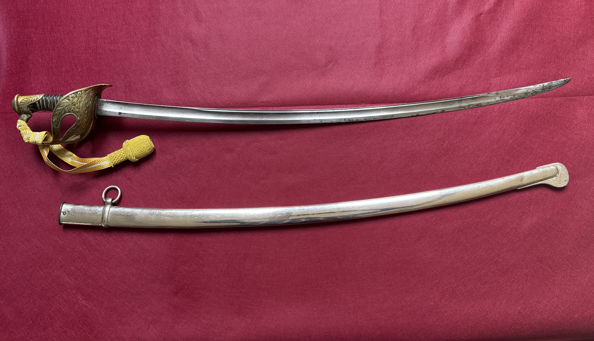
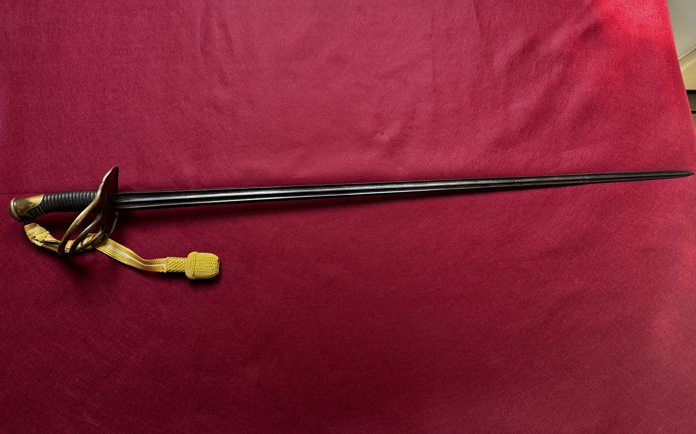
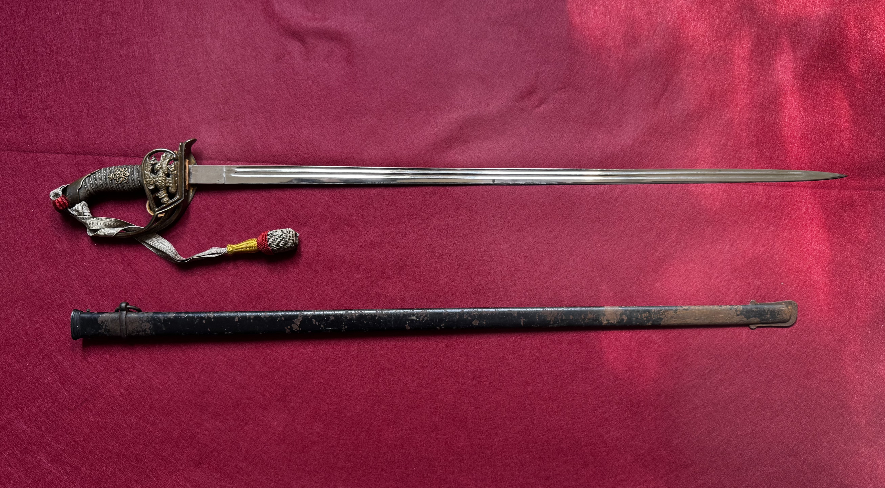
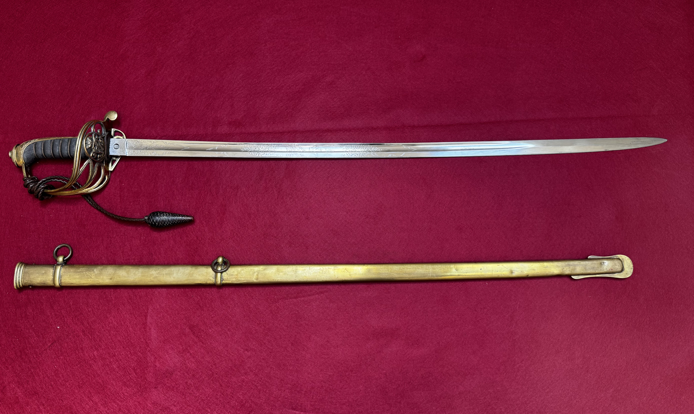
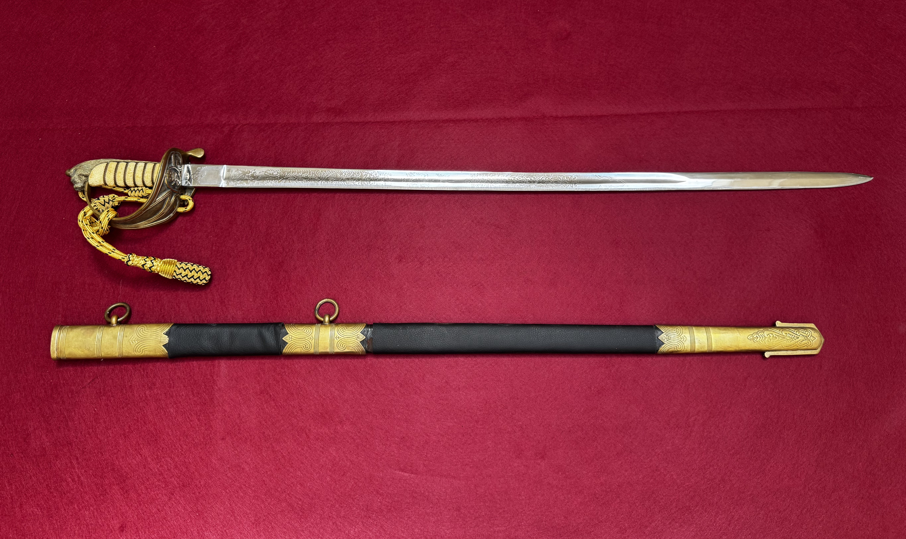
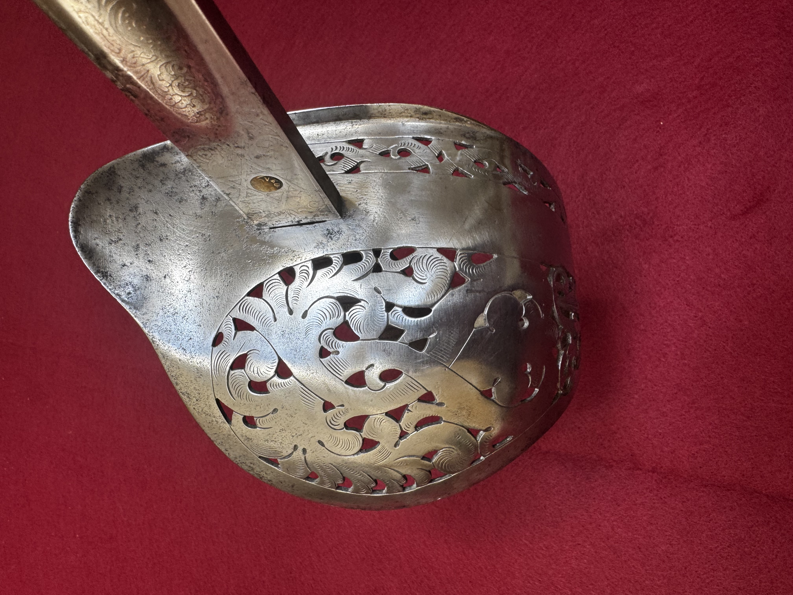
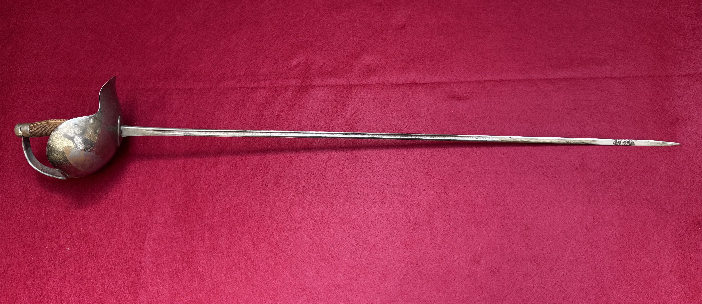
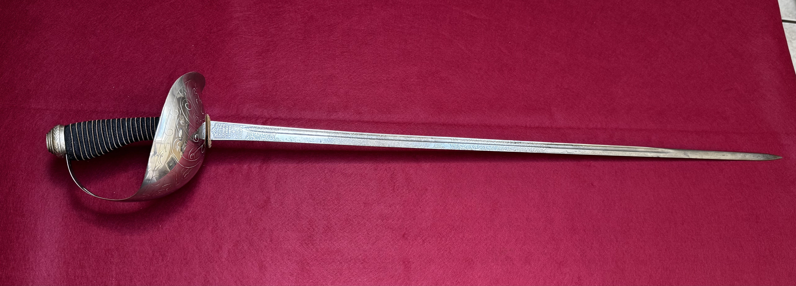
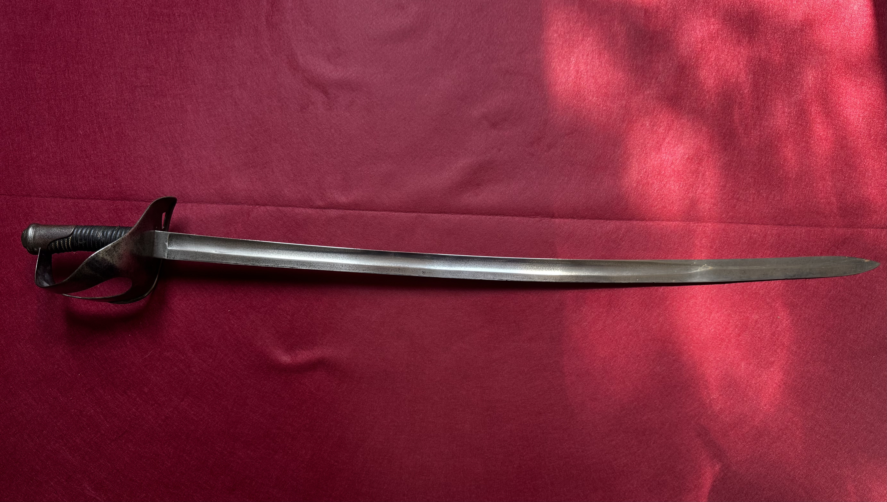
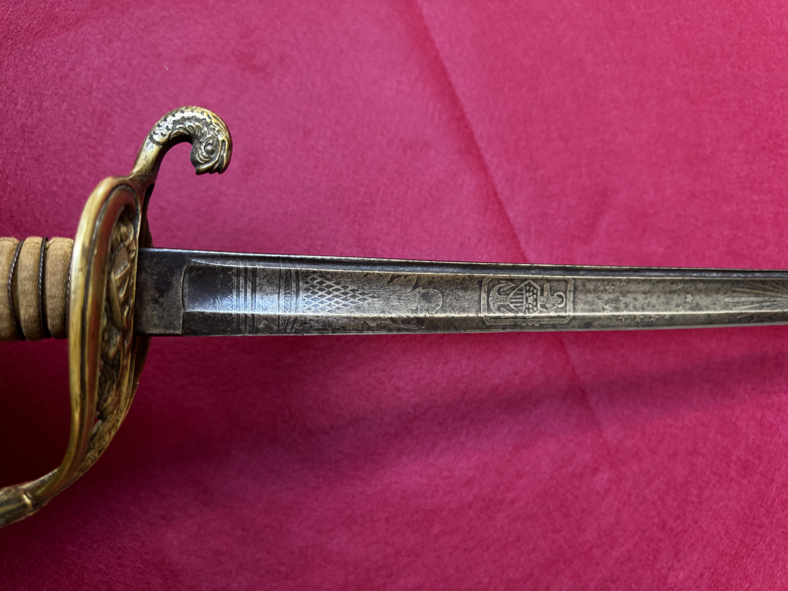

France Spotlight 01
French Model 1896 Cavalry Saber
Late nineteenth-century French cavalry saber from the Historical Sword Society collection, documented through detailed photographs and artifact notes.
View SwordDedicated to the study,
preservation, and practice of
European swordsmanship.
Objects as primary sources
This section presents curated spotlights on individual swords, emphasizing identification, maker and inspector marks, measurements, metallurgy, condition, and historical context. Each sword spotlight will eventually link to its own dedicated page with full documentation.
France Spotlight 01
Late nineteenth-century French cavalry saber from the Historical Sword Society collection, documented through detailed photographs and artifact notes.
View Sword
France Spotlight 02
Variant example combining a French Model 1896 hilt with an earlier Model 1822 blade, documented as part of the Historical Sword Society collection.
View Sword
France Spotlight 03
Early nineteenth-century heavy cavalry sword from the Napoleonic era, designed for powerful cutting in mounted combat.
View Sword
France Spotlight 04
Mid-19th century French infantry officer’s sword reflecting the transition from battlefield weapon to refined officer sidearm.
View Sword
Germany Spotlight 05
Imperial German infantry officer’s sword, or Infanterie Offizier Degen, representing rank, service, and martial identity in the late nineteenth and early twentieth centuries.
View Sword
Spain Spotlight 06
Ceremonial Spanish diplomatic sword reflecting civil authority, national identity, and formal state service traditions.
View Sword
Britain Spotlight 07
Victorian-era British infantry officer’s sword, representing the evolution toward a more functional and standardized blade design.
View Sword
Britain Spotlight 08
Victorian-era British naval officer’s sword reflecting mid-19th century pattern standardization.
View Sword
Britain Spotlight 09
Standard British infantry officer’s sword emphasizing thrust-centric blade design.
View Sword
Britain Spotlight 10
British training saber with a sharpened edge and fine point, reflecting advanced military swordsmanship practice.
View Sword
Britain Spotlight 11
British cavalry officer’s sword engineered for thrust-centric combat with a straight, spear-point blade.
View Sword
Italy Spotlight 12
Italian cavalry saber reflecting mid-19th century European cut-oriented blade design.
View Sword
United States Spotlight 13
Early American officer’s sword reflecting transitional European-influenced design of the War of 1812 period.
View Sword
United States Spotlight 14
Regulation naval officer sword reflecting rank, tradition, and maritime identity.
View SwordStudy · Preserve · Practice
Explore preservation and conservation, or contact the Society to discuss research and historical artifacts.